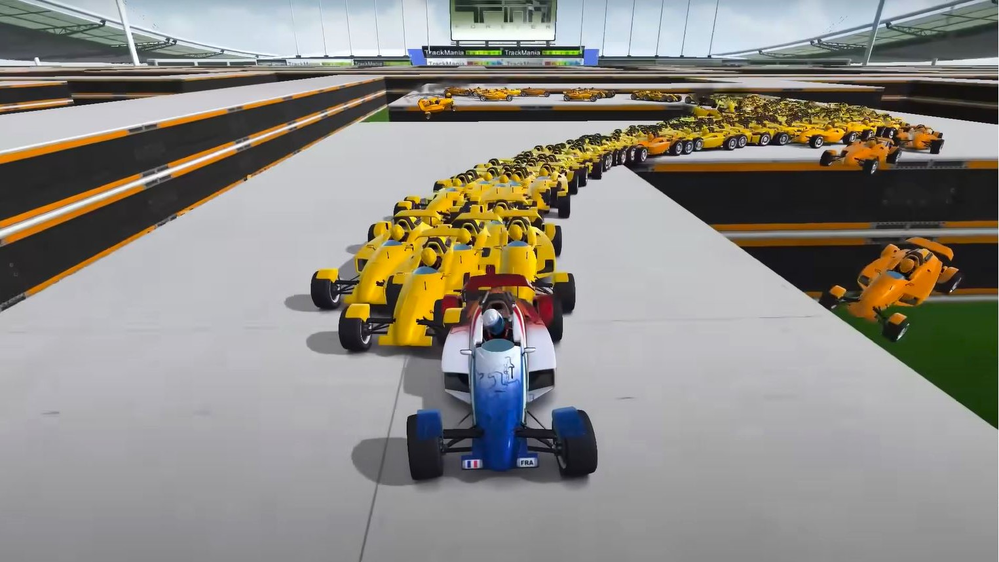
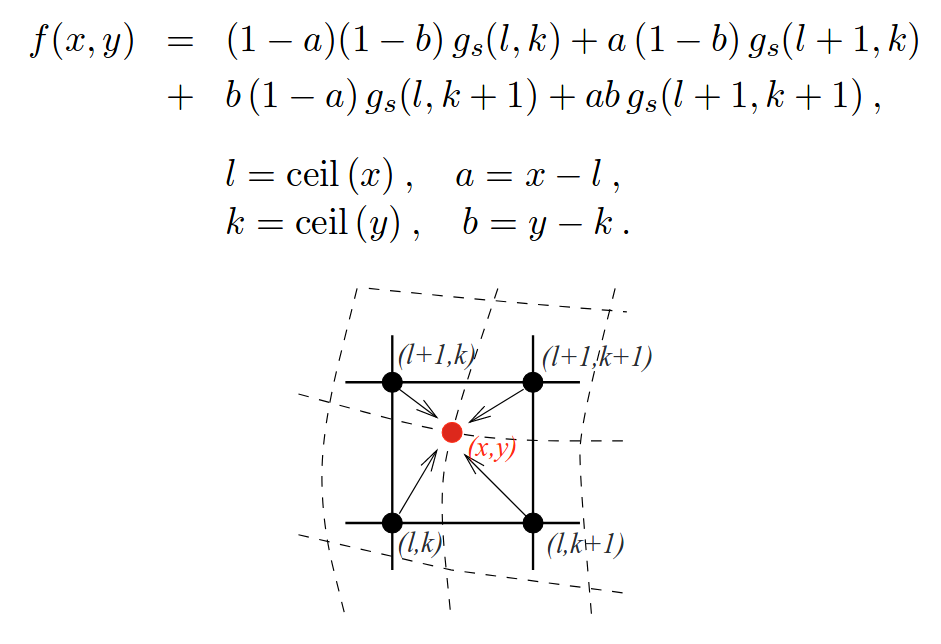
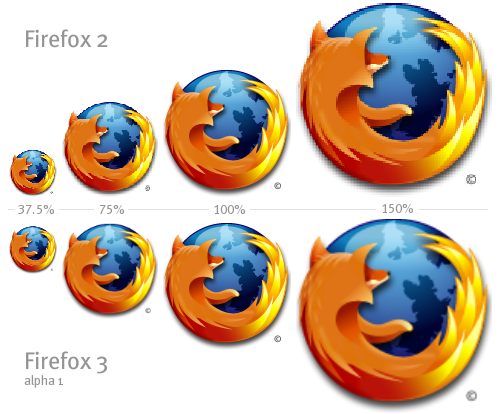
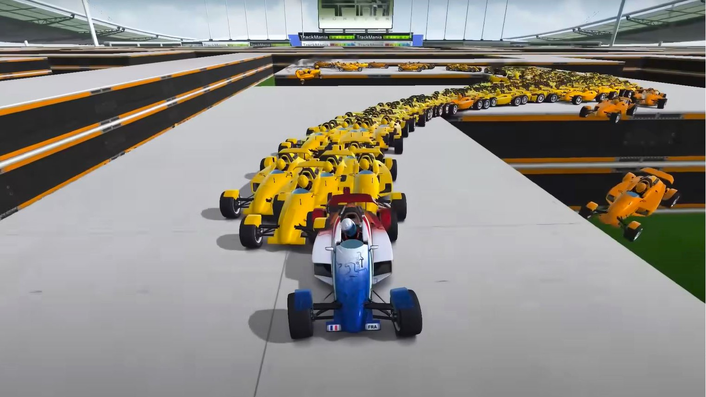
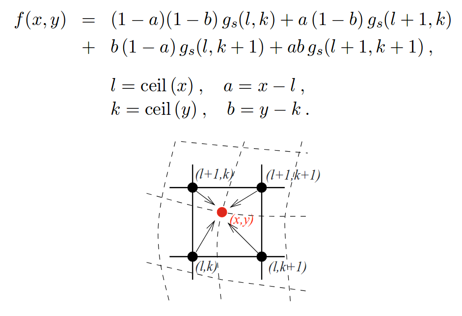
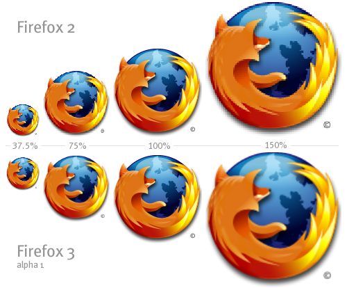

TRACKMANIA
This is currently a work in progress, but I am working on reverse engineering a reinforcement learning A.I. to help me learn machine learning. The A.I. is a incharge of racing a car around a set track, and slowly learns over successive generations of trial and error how to lap it correctly. below is the link to the git I'm following.


 




